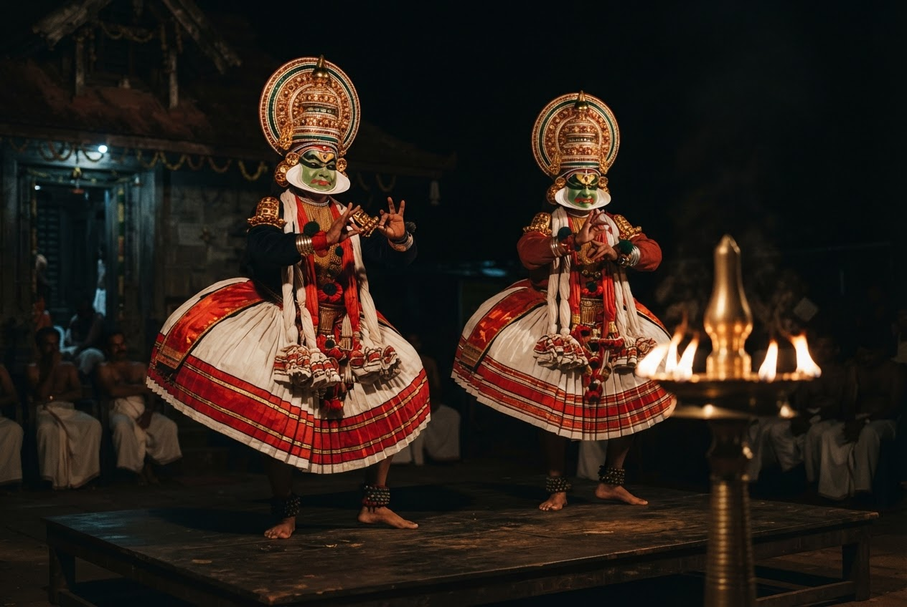
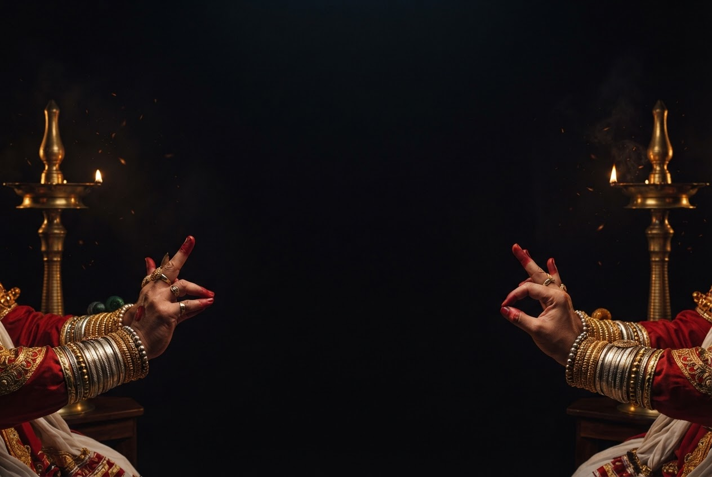
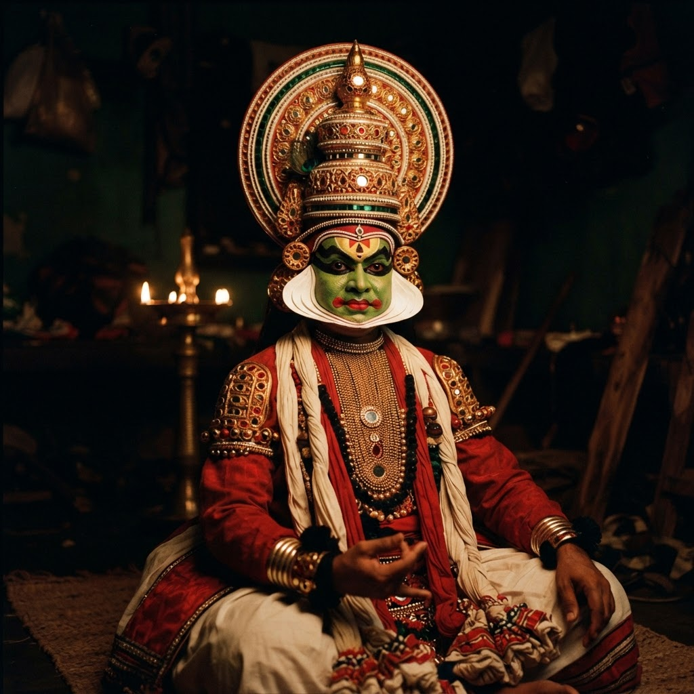
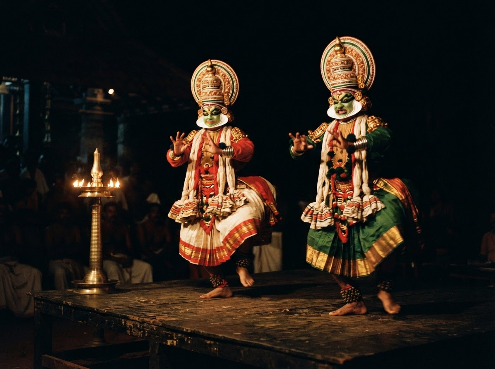
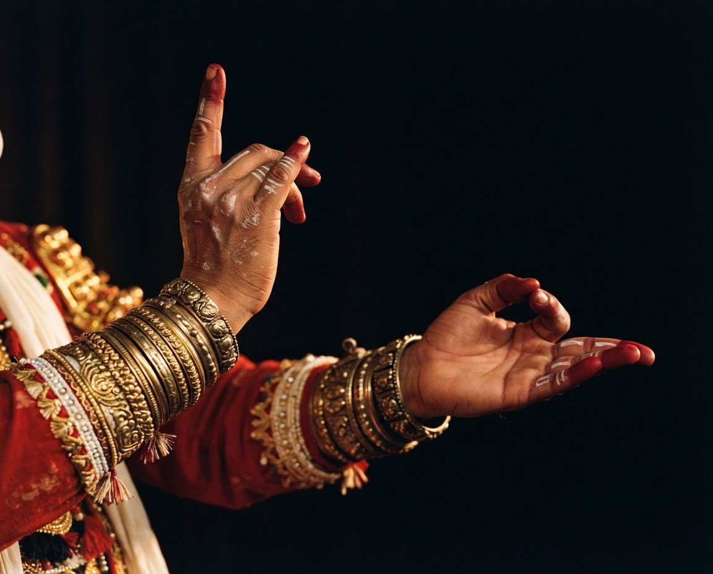
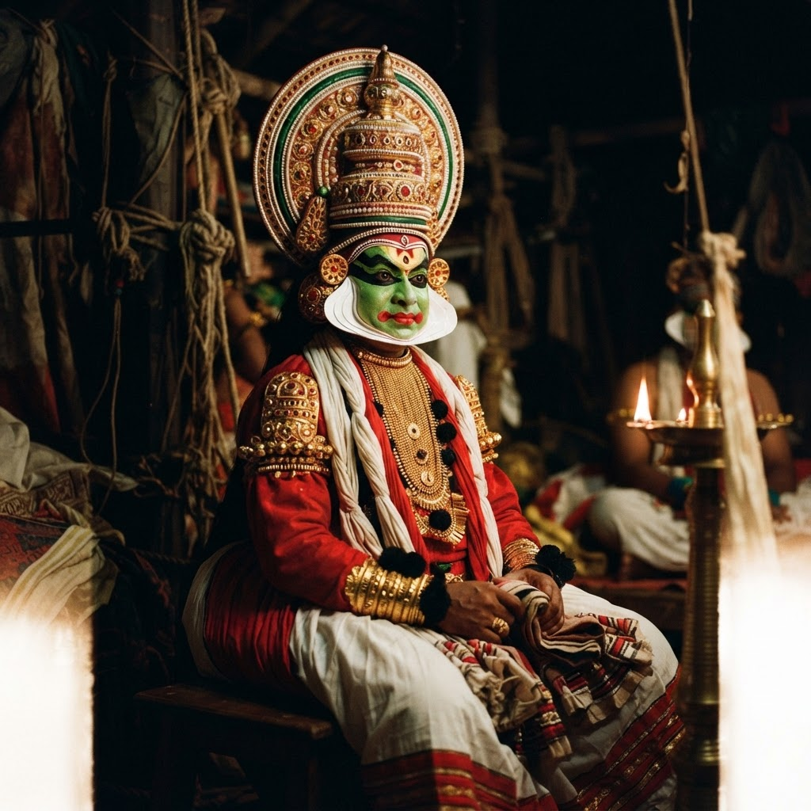
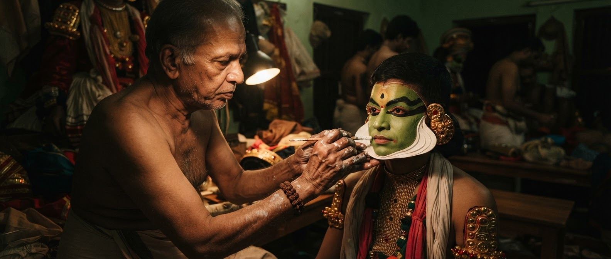
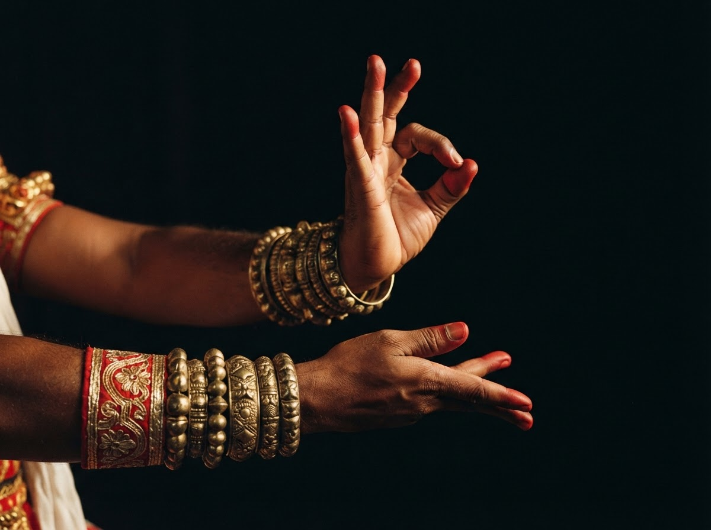
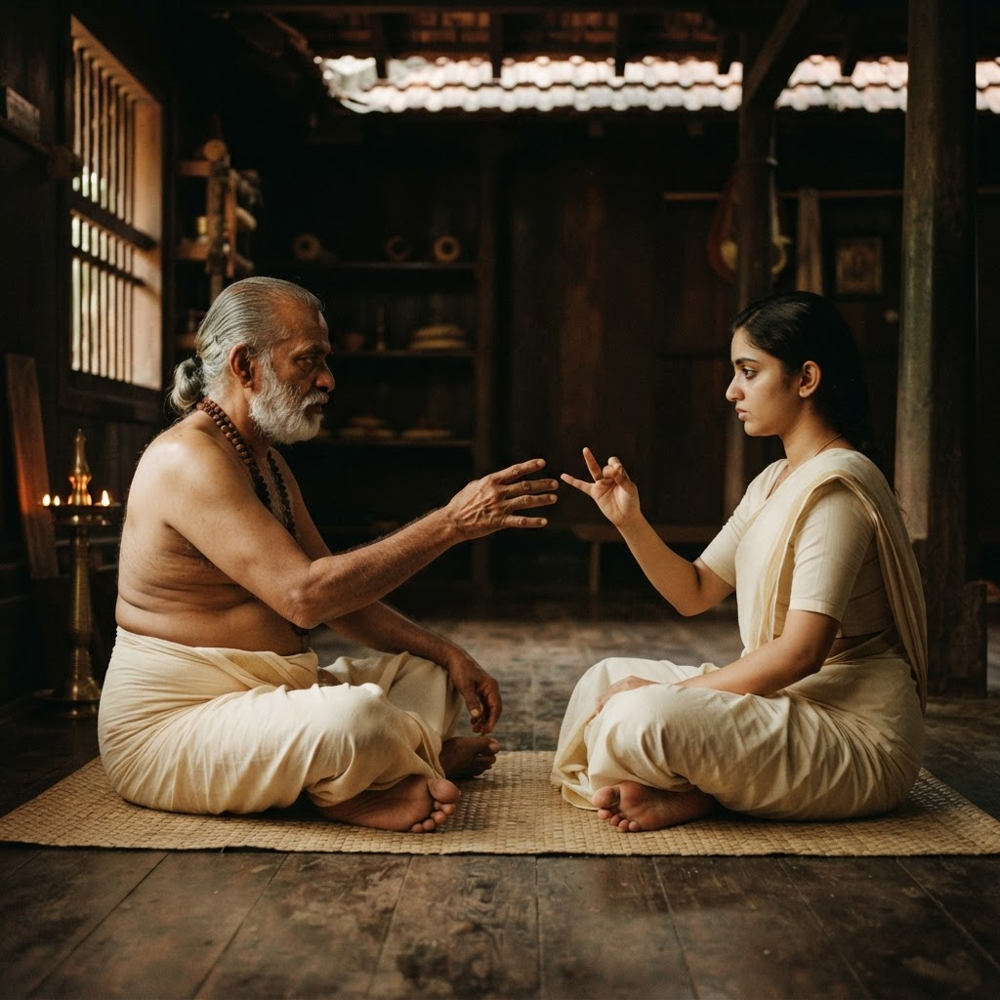

The stage comes alive
Enter an expressive world of epic storytelling, evocative music and extraordinary stagecraft.

KATHAKALI GRAMAM AYROOR
Immerse yourself in the majestic, silent drama of Kathakali.

Kathakali Gramam Ayroor is a cultural space rooted in the relationship between a community and Kerala’s remarkable classical dance-drama. Here, the stage becomes a meeting place for artists, learners and everyone drawn to the language of Kathakali.
Our purpose is to nurture that connection: bringing performance closer to everyday life, opening conversations around the art, and encouraging a new generation to listen, learn and participate in a living tradition.
More than a performance. A way to encounter the stories, skills and people who keep the tradition alive.

A celebration of Kathakali’s power to bring people together. Discover performances, artistic exchange and the shared anticipation of a story unfolding beneath the glow of the lamp.
Classical storytelling
Artist encounters
A shared cultural experience
In Kathakali, a hand can become a flower, a forest or a feeling. Mudras work with the eyes, face and body to give the story its extraordinary expressive vocabulary.

THE HANDS SPEAK. THE EYES GIVE MEANING.
Behind every unforgettable performance is a life of discipline. We honour the artistry of performers, teachers and craftspeople, and the quiet dedication that allows Kathakali to endure.
A commitment to the depth and integrity of the art.
Knowledge carried through patient practice and guidance.
A tradition sustained by artists and community together.




KNOWLEDGE LIVES WHEN IT IS SHARED.
An art form flourishes when there is room for new curiosity. Explore pathways into Kathakali through guided appreciation, conversations with practitioners and connections with the wider learning community.